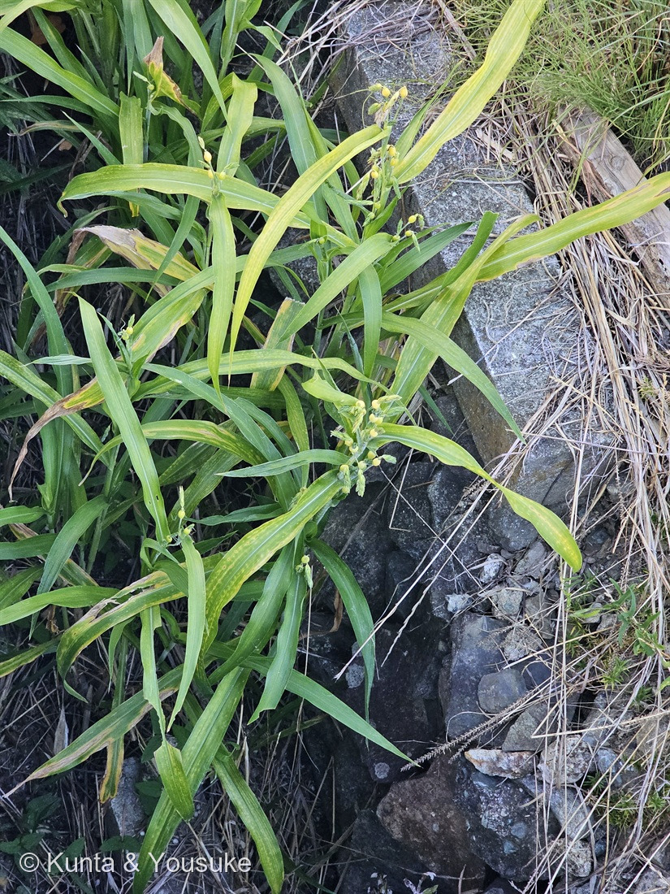
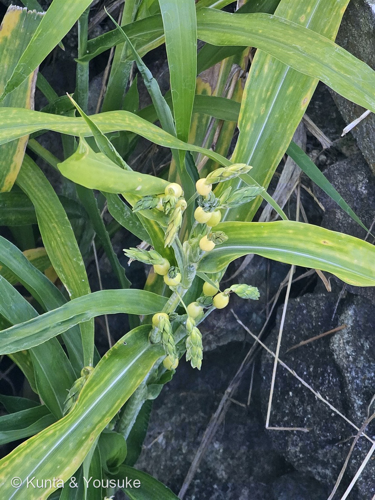

地図を読み込んでいるよ…
🔍 写真も地図も、押しているあいだ拡大して見られるよ（スマホは指を置いてすこし待ってね）。
🌍 の地図＝この子がもともと自生している場所を緑に。熱帯アジア。三河の植物観察は「帰化種 中国、台湾、インド、ネパール、スリランカ、ラオス、ミャンマー、フィリピン、タイ、ベトナム、ニューギニア原産」とし、Wikipediaは「東南アジア、インドなどの熱帯アジア原産」で日本には古い時代に食用植物として伝来したと考えられているとする。日本のものは人が運んできた子孫で、いまは水辺に広く野生化している。
⭐熱帯アジアの草だよ。三河の植物観察は「帰化種 中国、台湾、インド、ネパール、スリランカ、ラオス、ミャンマー、フィリピン、タイ、ベトナム、ニューギニア原産」とし、Wikipediaは「東南アジア、インドなどの熱帯アジア原産」とする——⭐だから三河が名前を挙げている国だけを塗った。⚠書いていない国は塗らないでおいたよ（172 アカバナユウゲショウと同じやり方）。⭐⭐⭐そして、この地図でいちばん大事なのは「日本が緑じゃないこと」——⚠日本のジュズダマは、ぜんぶ人が運んできた子の子孫なんだ。Wikipediaは「日本には古い時代に食用植物として伝来したと考えられている」と書いている。⭐⭐つまり、いま用水路の護岸に勝手に生えているこの草は、もともと「食べるために連れてこられた」子。⭐そのあと人は、玉のやわらかいハトムギのほうを選んで畑に残し、硬いこの子は野に出た——⭐同じ種なのに、かたっぽは畑で作られ、かたっぽは水辺で自由にしているんだよ。⭐硬い玉は数珠やお手玉になって、子どもの遊び道具として日本じゅうに広がった。
⚠ 地図は国（日本と中国だけ県・省）までしか塗れないから、ほんとうの分布より広く見えていることがあるよ。地図はだいたいの場所。正確なところは、上の文を見てね。
ジュズダマ
Coix lacryma-jobi L. var. lacryma-jobi
数珠玉／英名 Job's tears（ヨブの涙）
イネ科 · Poaceae（ジュズダマ属）
名前と学名の由来 ── 数珠の玉と、ヨブの涙
- 和名ジュズダマ（数珠玉）＝かつて球形状の実をつないで数珠の玉にしたことに由来（Wikipedia）。⭐お手玉や、子どもの首かざりにもなったよ。
- Coix（コイクス）＝ジュズダマ属の属名。
- ⭐⭐lacryma-jobi（ラクリマ・ヨビ）＝「ヨブの涙」。英名 Job's tears も同じ意味。⭐あの玉のつやつやした形を、涙のしずくに見立てた名前だね。
- ⭐⭐⭐そして、この名前はリンネの思いつきじゃなかった。英語版Wikipediaによれば、「Job's tears」は アラビア語 دموع أيوب（dumūʿ ʾAyyūb＝ヨブの涙）の直訳（calque）で、中世にこの草をヨーロッパへ持ちこんだアラビアの商人たちが使っていた呼び名なんだ。⭐つまり学名は、商人たちの言葉の、翻訳だった。
- ⚠ 旧約聖書のヨブ記のヨブのことだけど、⚠なぜヨブの涙なのかを説明した出典には当たれなかったので、そこは書かないでおくね。
この植物のこと
- イネ科ジュズダマ属の大型の草。⭐この図鑑で6人目のイネ科（022 エノコログサ・136 トウモロコシ・144 オヒシバ・166 スズメガヤのなかま・185 タカノハススキに続く）で、ジュズダマ属ははじめてだよ。
- ⚠背たけは出典で食い違っている＝三河の植物観察「高さ1〜3m、10節以上あり、枝分かれする」／Wikipedia「1〜2メートル」。⭐どちらにしても、草としてはかなり大きい。
- 葉は線状披針形。三河「長さ10〜40(60)㎝×幅1.5〜7㎝、中脈は白色で目立ち丈夫」。⭐写真でも、まん中の白いすじがはっきり通っている——⭐この白い中脈は、136 トウモロコシの葉とそっくりだよ。
- 花期は6〜10月（三河）。
- ⭐水辺の草。この株も用水路の石積みの護岸に生えていた——出典の言う住まいと、ぴったり合っている。
- ⭐日本には古い時代に「食用植物として」伝えられたと考えられている（Wikipedia）。⚠つまり、道ばたのこの草は、もともと人が食べるために運んできた子の子孫なんだ。
⭐⭐⭐ 燻太さんの「変な形」の正体 ── あの玉は、実じゃない
燻太さんが「若い果実を見るのは初めてだけど、変な形をしているね」と言った、まさにそこが、この草のいちばん面白いところなんだ。
⚠ まず、ひとつだけ直させて。あの玉は、果実じゃないんだ。
- ⭐⭐⭐あの玉は、葉のさや（葉鞘）が硬くなったもの。英語版Wikipediaは「the hardened "shells" ... are technically the fruit-case or involucre (hardened bract)」とし、さらに「develop from a leaf sheath at the end of the stem（茎の先の葉鞘から発達する）」と書いている。
- ⭐本当の果実（穎果）は、その玉の中にいる。⭐玉は、実そのものではなく、実の入っている鎧。
- ⚠呼び名は資料でそろっていない＝三河は「胞果」、日本語版Wikipediaは「苞」「苞葉鞘」、英語版は「involucre（苞）」。⭐この図鑑では「苞鞘（ほうしょう）」と呼んでおくね。
⭐⭐⭐ そして、ひとつの穴から、二つのものが出る。ここが「変な形」の正体だよ。三河の植物観察に、写真そのままの一文があった。
「1個の雌性の無柄の総は胞果に包まれ、他の1(2)個の花序柄のある雄性の総は胞果の頂孔から突き出る」
つまり——
- ⭐雌の花は、玉の中に閉じこもっている。（柄がなくて、丸ごと包まれている）
- ⭐雄の花の束は、玉のてっぺんの穴（頂孔）から、外へ突き出る。⭐写真②の、玉から生えている緑のうろこ状の穂が、それだよ。
- ⭐そして、その同じ穴から、雌しべの柱頭も出てくる。三河「柱頭は2個、長くなり、胞果から突き出る」。Wikipediaも「苞葉鞘の先端から外に出して、風で運ばれてきた花粉を受粉」と書いている。
⭐⭐⭐ 玉の中に閉じこもった雌の花は、小さな穴から柱頭を2本だけ出して、風を待っている。そして同じ穴から、雄の花が立ち上がっている。
⭐ 英語版Wikipediaは雄の総を「project upright（まっすぐ上へ突き出る）」と書いていて、写真②でも、玉から出た緑の穂はちゃんと上を向いている。——⭐これは、この写真の向きを決めるときの手がかりにもなったよ（見下ろしの写真で上下の手がかりが少なかったから、EXIFと、この「上向きに立つ」という記述の両方で確かめた）。
⚠ 柱頭は、この写真では見つけられなかった。⭐まだ若い玉だから、これから出てくるのかもしれない——次に行ったときの宿題にしたよ。
⭐ 若い玉は、まだ鎧じゃない
- 秋に熟すと、苞鞘は「長さ10ミリメートル、直径7mm卵状球形の数珠玉状」に硬化する（Wikipedia）。灰色〜黒くなって、糸が通せるほど硬くなる。
- ⭐でも写真の玉は、まだ淡い黄緑色でつやつやしている。⭐⭐燻太さんが見たのは、鎧が固まる前の姿だったんだ。
- ⏳秋にもういちど会いに行って、黒くなった玉と見くらべよう——宿題にしたよ。
⭐⭐⭐ 136 トウモロコシと、同じことをしている
⭐この子は、136 トウモロコシのおまけとして「探してみたい」に入れておいた子だった。⭐⭐そして、来た。
ならべると、二人が同じ発想でできていることが分かるよ。
- 雄花と雌花：トウモロコシ＝別々（雌雄異花・同株）／ジュズダマ＝別々（同株）
- 雌花のいる場所：トウモロコシ＝葉のわきの雌穂／ジュズダマ＝苞鞘の中
- 包むもの：トウモロコシ＝皮が雌穂ぜんたいを包む／ジュズダマ＝苞鞘が実ひとつを包む
- ⭐外に出るもの：トウモロコシ＝ひげ（絹糸）＝花柱。ひげ1本＝粒1つ／ジュズダマ＝柱頭2本が、玉の頂の穴から
- 花粉の運び手：どちらも風
⭐⭐⭐ どちらも「雌の花を包んで、柱頭だけ外に出して、風の花粉を受ける」という同じ仕組み。⭐ちがうのは規模だけ——トウモロコシは何百粒を一枚の皮でまとめて包み、ジュズダマは一粒ずつに鎧を着せる。
⚠ そして、これは他人の空似（収れん）ではないよ。⭐トウモロコシ属（Zea）とジュズダマ属（Coix）は、イネ科のなかでも近い仲間とされてきたグループなんだ。⭐似ているのは、ほんとうに親戚だから。
⭐⭐ おまけ ── ハトムギは、同じ種
おまけは、ハトムギ（鳩麦）。⭐⭐じつは、この子と同じ種なんだ（Coix lacryma-jobi var. ma-yuen＝栽培変種）。
- 見分け方（三河）＝ハトムギは「花序が垂れ下がり、花柱が胞果の外に長く出る。胞果に縦溝があり」。⭐そして玉がやわらかい——Wikipedia「実が薄くそれほど固くならない」。
- ⭐やわらかいから、食べられる。英語版Wikipediaは「roasted kernels are brewed into hatomugi cha（炒った粒がハトムギ茶になる）」とし、⭐漢方の「ヨクイニン（薏苡仁）」もこの子だよ。
⭐⭐⭐ ここが面白い。同じ種なのに、玉が硬いか、やわらかいかで、行き先が正反対になった。
- ⭐硬いジュズダマ → 数珠・お手玉・首かざり。
- ⭐やわらかいハトムギ → お茶・薬。
⭐⭐ 人が選んで育てたのは、「鎧を脱いだほう」だった。
参考：三河の植物観察・ジュズダマ（苞鞘の構造・柱頭・葉・稈・花期・ハトムギとの違い）／ジュズダマ - Wikipedia（名前の由来・苞葉鞘の硬化・受粉・渡来）／Coix lacryma-jobi - Wikipedia（ヨブの涙の語源・葉鞘由来・雄小穂・ハトムギ茶・ヨクイニン）